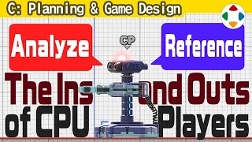
速览
先看几段老游戏的展示模式（attract mode）——电脑大概是比较随便地操作的。由电脑操作的玩家，简称 CP（或 CPU）。人与电脑毕竟不同、差太多：自由度越高的游戏 CP 越难做，但做出人类无法反应的动作，会有强烈的不讲理感（例如《拳皇 '98》开招就防、硬直中反击）。桌游、卡牌掷骰时，也常被认为电脑在出好点——两边都是电脑做的嘛；即使是人能做到的范围，被认为作弊也是 CP 的宿命。差异因游戏内容和类型很大；像《大乱斗》这类 CP 制作非常难，但有对战要素的游戏想一个人玩就必须做，很辛苦——在樱井项目里这是交给别人比例较高的领域（当然会监修）。动作游戏的 CP 怎么做：电脑没有眼睛，从各种数据获得信息——多远的位置、什么状态的对手、做什么；把含必杀技在内的招式攻击范围和移动范围全部数据化（或从原数据提取），以射程和攻击时机储存；也需参照对手角色的攻击数据。用这些数据决定行动，并可依整体流程中途改变逻辑或倾向：体力低就发怒、设定擅长间距、依速度与跳跃高度对应，也许还有赢太多就放水的游戏。因此逻辑矛盾可能让它不动——某判断与另一判断冲突（例如攻击与回避），越复杂、条件越多越容易发生。《大乱斗 特别版》准备了类似反射神经的东西，让它不会瞬间反应；操作左右颠倒时也会稍微混乱——和人一样，几乎不会毫无对应，但也不会一直反着掉下去。特别版的 CP 比以往提高了攻击性，也就是对防御、回避或待机打法较弱：设定强 CP 的人想和强 CP 战斗，这时适度等待或机械般反应缺乏乐趣，所以以攻击为主，让玩家好好应对就能赢。极端地说，让它持续精准完美防御与回避，或许能做出无敌的 CP，但那怎么都不会好玩——别忘了一切目的都是让人开心。
1. CP 与人差太多 0:03
先看几段老游戏的展示模式（attract mode）演示——大概是电脑比较随便地在操作吧。由电脑操作的玩家，简称 CP（或 CPU）。
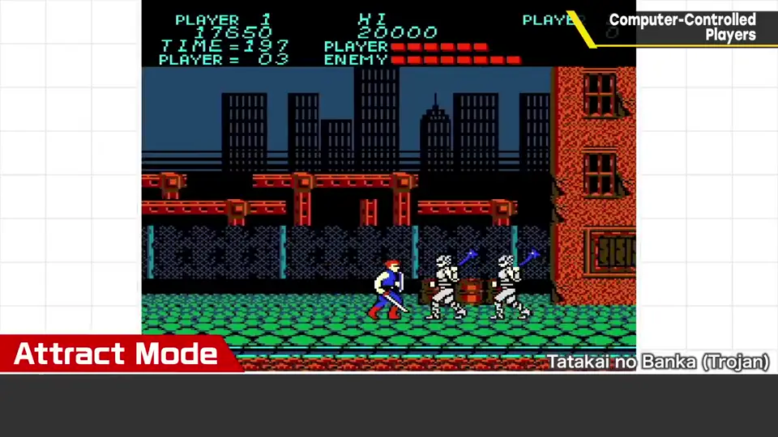
人和电脑毕竟不同，差得太多。自由度越高的游戏，CP 的对应越难；但如果做出人类无法反应的动作，就会有极强的不讲理感。
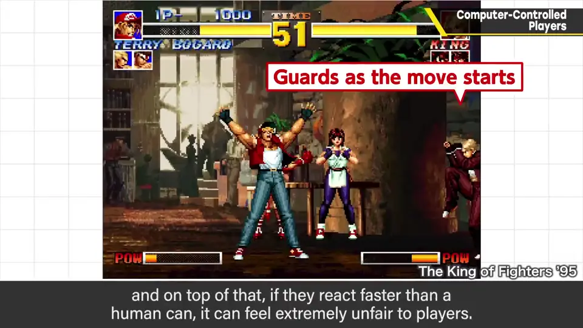
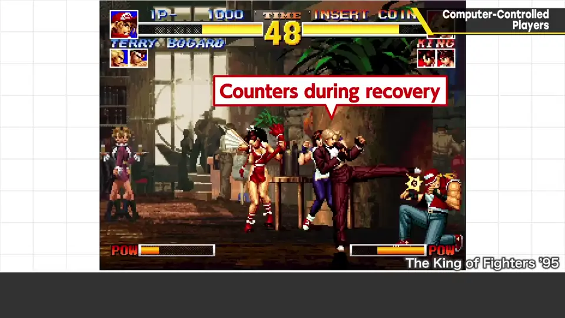
桌游、卡牌游戏掷骰子时，也常被认为电脑在出好点数——毕竟两边都是电脑做的，这也难怪。即使是人能做到的范围，也被觉得狡猾，这是 CP 的宿命。
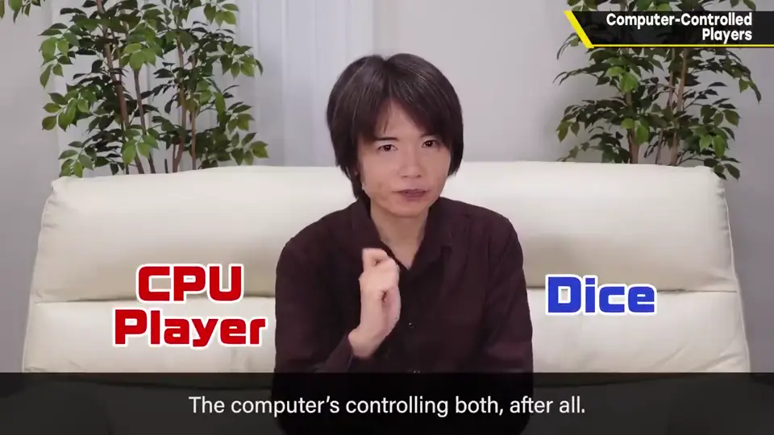
2. CP 很难做 1:38
因游戏内容、类型差别很大，像《大乱斗》这类 CP 制作非常难。但有对战要素的游戏，想一个人玩就必须做，很辛苦。在樱井的项目里，这是交给他人比例较高的领域（当然他会监修）。
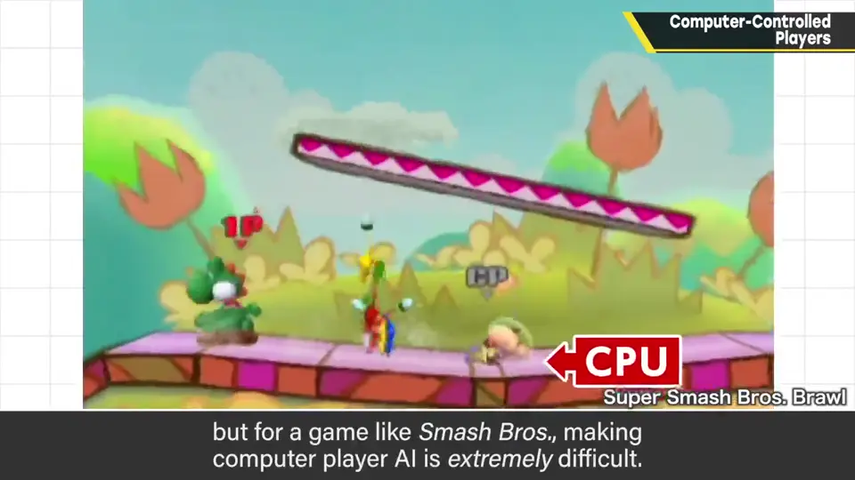
3. CP 如何做决定 2:16
动作游戏的 CP 怎么做？电脑没有眼睛，所以从各种数据获取信息：多远的位置有什么状态的对手，于是做什么。
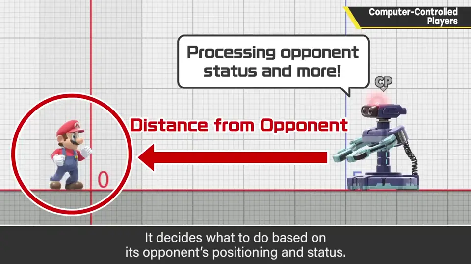
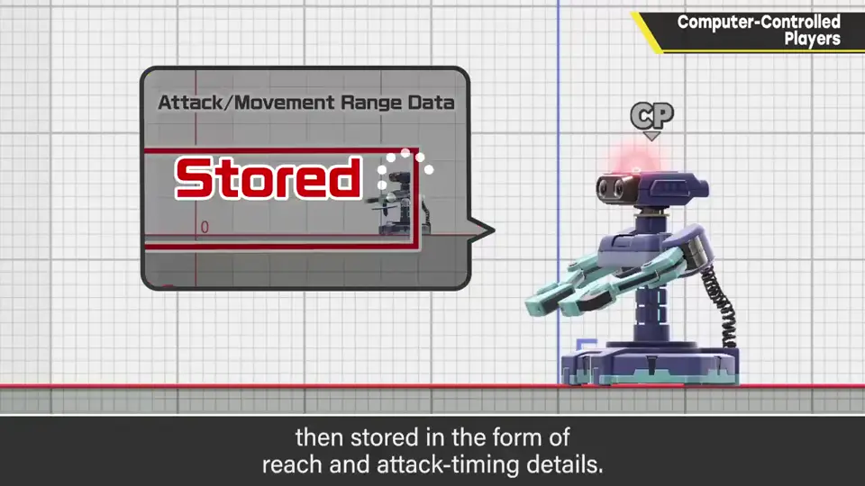
把含必杀技在内的招式攻击范围和移动范围全部数据化（或从原始数据提取），以射程、攻击时机的形式储存；同样也需要参照对手角色的攻击数据。
招式范围数据
对手攻击数据"] --> L["逻辑与倾向
（可中途切换）"] L --> A["行动：攻击/回避/移动…"] L -. 判断冲突 .-> X["可能卡住不动"]
依据这些数据决定行动；也可以根据游戏整体流程中途改变逻辑或倾向：例如体力低了就发怒，设定擅长的间距，按速度与跳跃高度来对应，也许还有赢太多时会放水的游戏。
因此，各逻辑间若有矛盾，有时会动不了——某判断与另一判断冲突（例如「攻击」与「回避」），越复杂、条件越多越容易出现。
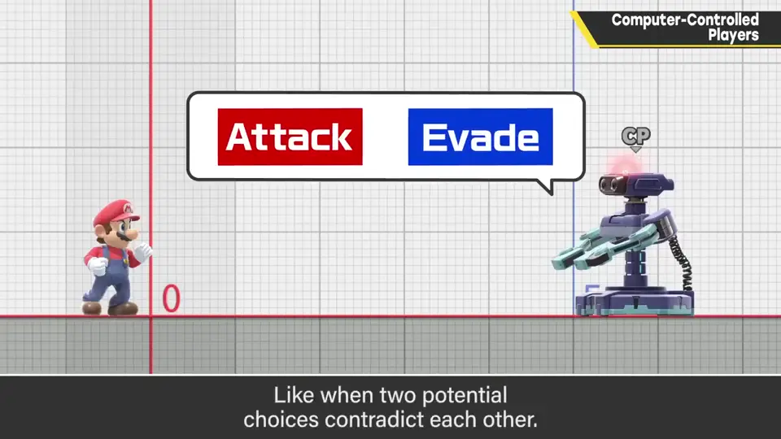
4. 《大乱斗 特别版》的 CP 3:31
- 准备了类似反射神经的东西，让它不会瞬间反应；
- 受到操作左右颠倒（如蘑菇效果）时，也会稍微混乱——像人一样，几乎不会完全不对应，但也不会一直反着掉下去。
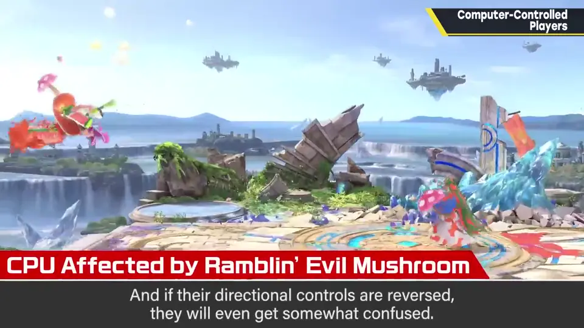
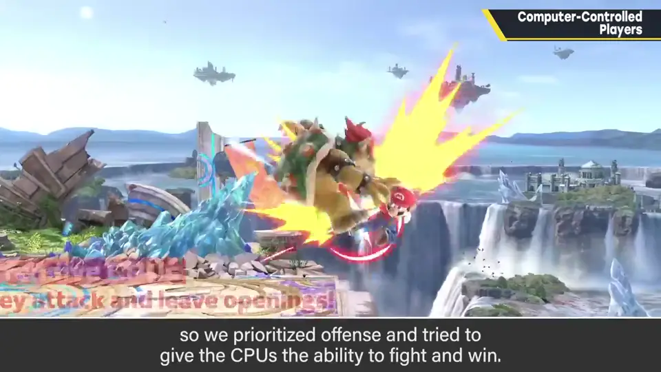
特别版的 CP 比以往提高了攻击性，反过来说对防御、回避或待机型打法较弱。设定强 CP 的人想和强 CP 打；这时若它恰到好处地等待、或做出机械般的反应，就不太有趣，所以改为以攻击为主，让玩家好好应对就能取胜。
自测题
1. 为什么 CP 做出人类无法反应的动作会出问题？
会让玩家感到极强的不讲理感（如开招就防、硬直中反击）。 0:39
2. 动作游戏的 CP 依据什么做决定？
与对手的距离和对手状态、数据化的招式攻击/移动范围（射程、时机）、对手的攻击数据等。 2:16
3. 《大乱斗 特别版》的 CP 做了哪些调整？为什么？
加入反射神经避免瞬间反应；提高攻击性、对防守待机较弱——因为想打强 CP 的人要的是有趣的对战，而不是机械反应。 3:31